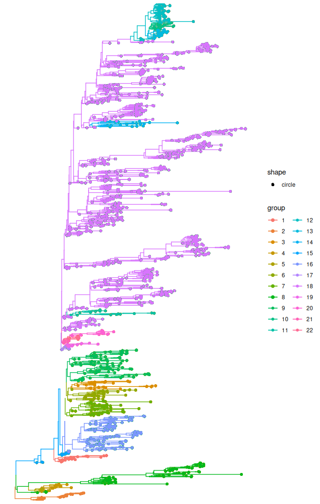
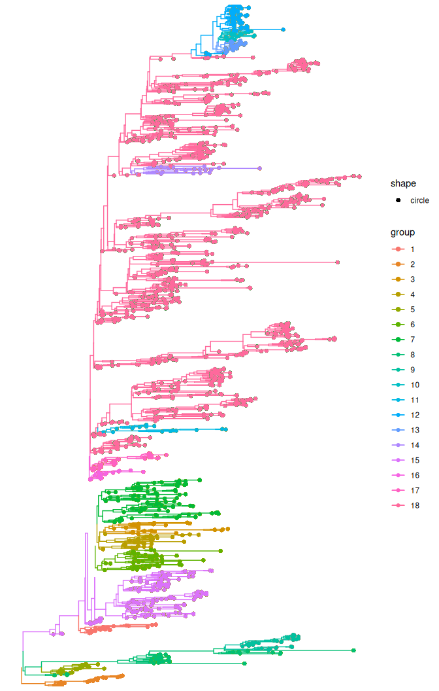
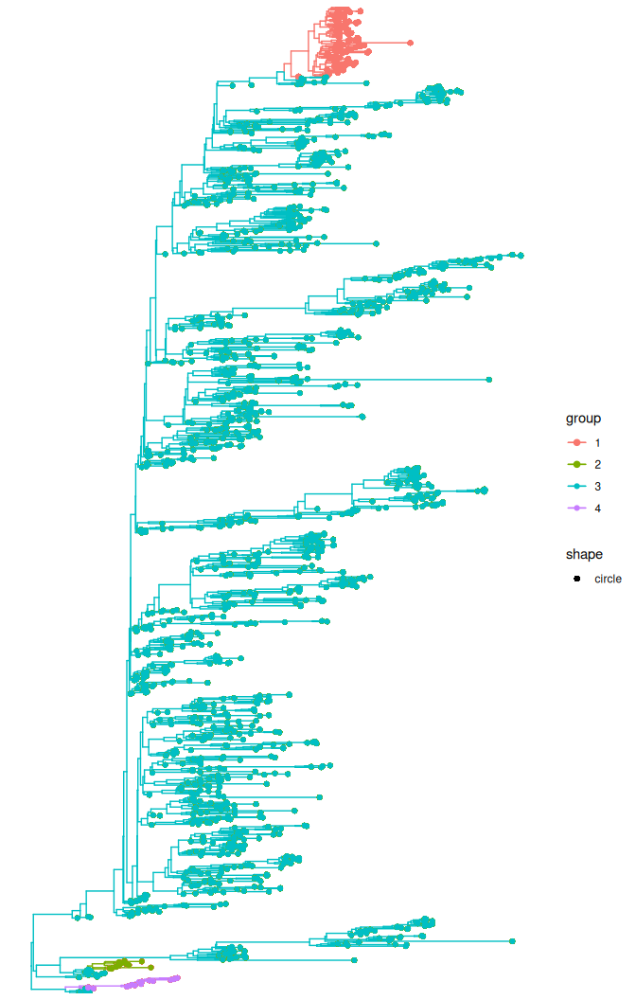
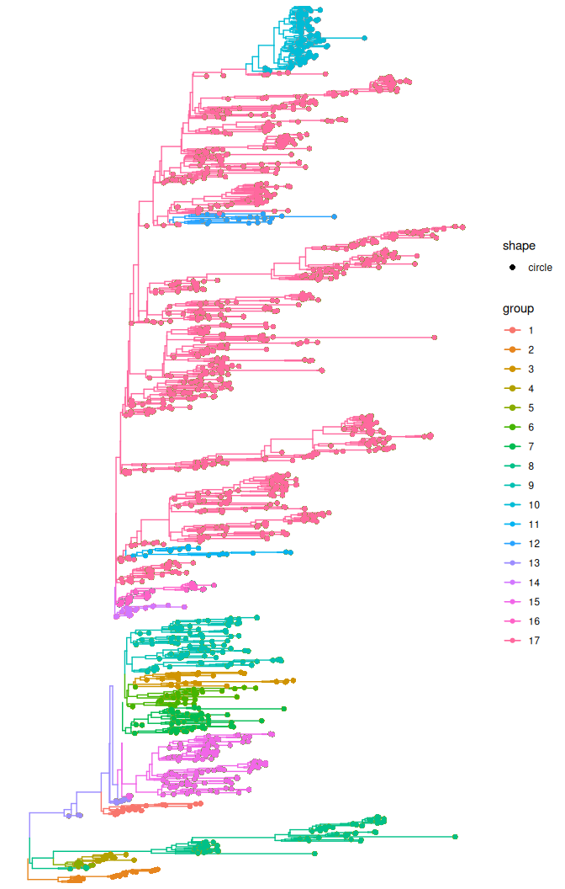

Node support values using treestructure (v2)
Vinicius Franceschi, Fabricia F. Nascimento, and Erik Volz
2026-07-05
Source:vignettes/supportValues.Rmd
supportValues.RmdIntroduction
This tutorial uses the public data available for Ebola here to demonstrate the use of node support values (e.g. bootstrap and posterior probability) to avoid designating population structure in badly supported clades.
We will use their time-scaled phylogenetic tree estimated with BEAST.
Throughout we use the default analysis, in which the split threshold
is calibrated to a target false discovery rate (fdr = 0.2),
with minCladeSize = 10.
First, we need to load the R package we will use in this tutorial.
The tree-construction and trestruct steps below are
shown for reference but are not run when this vignette is built (to
avoid network access and keep the build fast); each analysis loads a
precomputed result instead.
Now, we will load the time-scaled phylogenetic tree with posterior probability support values:
#get the dated tree by first downloading it from the URL below
tree_url <- "https://raw.githubusercontent.com/ebov/space-time/master/Data/Makona_1610_cds_ig.GLM.MCC.tree"
tmp_file <- tempfile(fileext = ".tree")
#Download BEAST tree to a tmp file
download.file(tree_url, tmp_file, mode = "wb")
#read the downloaded tree
beast_tree <- read.beast(tmp_file)Then we need to convert the tree to a phylo object and
add the posterior probability information from the Bayesian tree to the
phylo object tree.
If we use the ape:read.nexus to read the tree that was
estimated with BEAST, we won’t get the posterior probability associated
to the clades.
We now convert the dated tree to phylo object.
dated_tre <- as.phylo(beast_tree)Now we add the posterior probability from the BEAST tree to the dated_tree object.
# Get number of tips
n_tips <- length(dated_tre$tip.label)
# Get BEAST tree as tibble (it will include node numbers and posterior probabilities)
tree_data <- as_tibble(beast_tree)
#get posterior probability
posterior <- as.numeric(tree_data$posterior[(n_tips + 1):nrow(tree_data)])
#add the posterior probability information to the `phylo` object
dated_tre$node.label <- posteriorAssign clusters without using node support
Firstly, we will assign clusters without using node support values.
Note that the parameter nodeSupportValues is set to
FALSE.
trestruct_res_nobt <- trestruct(dated_tre,
fdr = 0.2,
minCladeSize = 10,
nodeSupportValues = FALSE)Here, we load the precomputed result.
trestruct_res_nobt <- readRDS( system.file('trestruct_res_nobt.rds',
package='treestructure') )
plot(trestruct_res_nobt, use_ggtree = T) + ggtree::geom_tippoint()
The treestructure analysis resulted in 22 clusters.
Although treestructure uses only the shape of the tree,
the clusters largely correspond to country. The tip labels encode the
sampling country (Guinea, Sierra Leone or Liberia):
country <- sapply(strsplit(trestruct_res_nobt$tree$tip.label, "\\|"), `[`, 4)
country[!country %in% c("SLE", "LBR", "GIN")] <- "other"
table(cluster = trestruct_res_nobt$clustering, country = country)
#> country
#> cluster GIN LBR other SLE
#> 1 8 4 0 9
#> 2 24 0 1 0
#> 3 0 26 0 1
#> 4 14 0 0 0
#> 5 9 1 0 0
#> 6 7 30 0 0
#> 7 2 47 0 0
#> 8 69 0 0 4
#> 9 41 60 0 0
#> 10 0 0 0 22
#> 11 1 0 0 19
#> 12 0 0 0 70
#> 13 0 0 0 29
#> 14 1 0 0 18
#> 15 3 0 0 11
#> 16 71 41 1 4
#> 17 0 0 0 10
#> 18 116 0 0 783
#> 19 0 0 0 12
#> 20 2 0 0 16
#> 21 0 0 0 12
#> 22 0 0 0 11Most clusters are dominated by a single country, recovering the introductions and cross-border spread of the epidemic from the coalescent pattern alone.
Sensitivity to the minimum clade size
minCladeSize sets the smallest cluster that can be
designated. Repeating the same analysis with
minCladeSize = 20:
trestruct_res_mcs20 <- trestruct(dated_tre, fdr = 0.2, minCladeSize = 20,
nodeSupportValues = FALSE)
trestruct_res_mcs20 <- readRDS( system.file('trestruct_res_nobt_mcs20.rds',
package='treestructure') )
plot(trestruct_res_mcs20, use_ggtree = T) + ggtree::geom_tippoint()
This finds 18 clusters, fewer than the 22 found with
minCladeSize = 10: raising the minimum size drops the
smallest clusters and gives a coarser partition.
minCladeSize also controls how many candidate clades are
tested at each step, which feeds into the multiple-testing threshold, so
the two partitions do not simply nest — each resolves somewhat different
structure. It is worth trying more than one.
Assign clusters using branch support
Now, we will assign clusters using the information on branch support. As we are analyzing a dated tree estimated with BEAST, the branch support is the posterior probability.
We designate clusters that have at least 0.95 posterior probability. This is achieved by setting to 95 the parameter nodeSupportThreshold in the trestruct function.
Note that now the parameter nodeSupportValues is set to
TRUE, which tells the algorithm that the node support values is provided
with the phylo object as node.label.
You can also provide the nodeSupportValues as a vector
with length equal to the number of internal nodes in the tree.
trestruct_res <- trestruct(dated_tre,
fdr = 0.2,
minCladeSize = 10,
nodeSupportValues = TRUE,
nodeSupportThreshold = 95)Here, we load the precomputed result.
trestruct_res <- readRDS( system.file('trestruct_res.rds',
package='treestructure') )
plot(trestruct_res, use_ggtree = T) + ggtree::geom_tippoint()
Now we have only 4 well-supported clusters with differences in coalescent patterns.
Note that this might change if you use a higher or lower value for the nodeSupportThreshold in the trestruct function.
Using the CH-index
As an alternative to a target false discovery rate, the CH-index
provides an automatic way to choose the significance level:
trestruct is run over a range of levels
(level = NULL with lower and upper bounds), and the level
maximizing the Calinski–Harabasz
index — the ratio of between- to within-cluster variance in node
heights — is selected. We show it here without node support,
because under strong support filtering the level barely changes the
result (the CH index is flat).
trestruct_chindex <- trestruct(dated_tre,
minCladeSize = 10,
nodeSupportValues = FALSE,
level = NULL,
levellb = 0.0001,
levelub = 0.01)The CH optimisation runs trestruct at several levels, so
it is slower; here we load the precomputed result.
trestruct_chindex <- readRDS( system.file('trestruct_chindex.rds',
package='treestructure') )
plot(trestruct_chindex, use_ggtree = T) + ggtree::geom_tippoint()
The CH-index selected a significance level of 0.00109, giving 17 clusters.